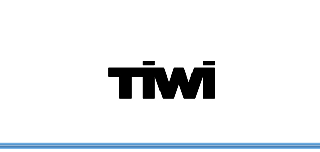
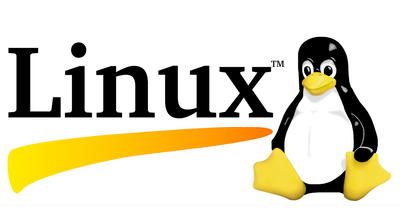

ALTERNANZA SCUOLA-LAVORO
-
Il 17 ottobre 2016 la nostra classe si è recata nell’ aula Multimedia A, del Blaise Pascal, per partecipare alla prima giornata di alternanza scuola-lavoro dell’anno scolastico 2016-2017.. Continua..
Il 18 ottobre 2016 la nostra classe si e’ recata per ad Impact Hub, ovvero uno spazio libero dove le persone si recano per proporre le loro idee per migliorare la vita delle persone.. Continua..
Il 19 ottobre 20l6 la nostra classe si nuovamente ad Impact Hub. La giornata e’ iniziata cercando di comprendere il concetto di “spazio di coworking”, ovvero uno.. Continua..
Il 20 ottobre 2016 si e’ tenuta al Blaise Pascal la nostra quarta attivita’ riguardante l’alternanza scuola-lavoro. Le attivita’ della giornata sono state proposte da Nicola Bigi, membro di Tiwi , azienda che si occupa.. Continua..

Il 21 ottobre 2016 ci siamo recati al Tecnopolo di Reggio Emilia. Dopo una breve introduzione riguardante i business , sia quelli stanno facendo successo sia quelli emergenti, si e’ iniziato a parlare di due aziende nate negli ultimi anni.. Continua..
Il 22 ottobre 2016 la nostra classe si è recata al Tecnopolo di Reggio Emilia per partecipare alla sesta giornata riguardante alternanza scuola-lavoro, la quale aveva un tema preciso.. Continua..
L’ 11 novembre 2016 la nostra classe si è recata presso Impact Hub per partecipare alla settima attività riguardante alternanza scuola-lavoro... Continua..
Il 4 marzo 2017 la nostra classe si è recata presso l’ Universita’ di Reggio Emilia per partecipare all'ottava attività riguardante alternanza scuola-lavoro.... Continua..
Il 28 marzo 2017 la nostra classe si è recata a Parma ad Intesa Sanpaolo. Dopo essere stati accolti gentilmente dal personale della banca... Continua..

Sabato 1 aprile 2017, la nostra classe si è recata presso il Centro Insieme alla Canalina dove si è svolta la giornata di alternanza.. Continua..

Il 4 aprile 2017 la nostra classe si è recata in visita ad H-Farm. Ci hanno spiegato che loro sono nati nel 2005 come incubatori di startup, e che grazie.. Continua..
Adriano Olivetti nasce a Ivrea e ha come progetto una macchina da scrivere molto più piccola e leggera. Steve Jobs nasce nel 1955 e trascorre un periodo.. Continua..
Il 19 gennaio 2018 abbiamo partecipato ad un incontro con Confindustria e Umana..
Continua..
Il 28 aprile 2018 ci siamo incontrati con i membri di Impact Hub ed alcuni ospiti, allo nuovo spazio giovani di via Cassoli 1 (Reggio Emilia).. Continua..
Dal 21 maggio al 29 giugno 2018 ho partecipato ad uno stage di alternanza scuola..
Continua..
Dal 15 al 18 ottobre abbiamo partecipato ad un corso presentato da Marco Argentieri..
Continua..Sabato 15 Dicembre abbiamo partecipato a un incontro tenuto dall’agenzia interinale..
Continua..
Nella prima parte, una persona preparata ci parlava dell'argomento del giorno, mentre nella seconda parte, suddividendoci in gruppi, eravamo noi, con le nostre conoscenze ed idee, a dover realizzare dei progetti che ci venivano assegnati.
La nostra esperienza è stata di tre tipi diversi:
Lezioni/laboratorio: mattinate di 5 ore in cui assistevamo a due ore, circa, di spiegazione e per il resto del tempo svolgevamo dei laboratori;
Sprint Contamina : giornate in cui eravamo divisi in gruppi e dovevamo trovare metodi innovativi per affrontare problemi attuali;
Giornate tematiche: le giornate tematiche erano giornate con un tema preciso riguardante l'innovazione. (Arduino, Wordpress, Linux, Open Data Day); Cliccando sui riquadri degli articoli potrai leggerli interamente.